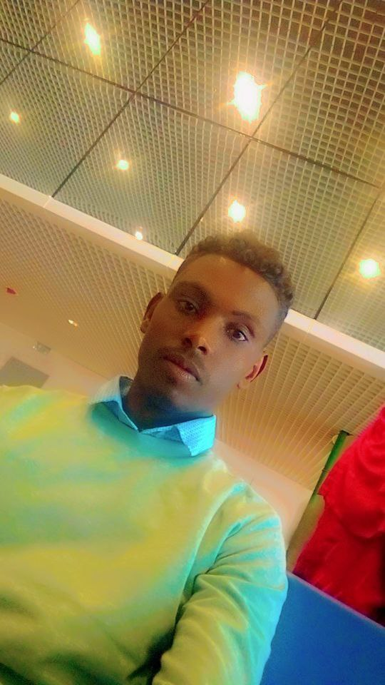

Web fundamentals
HTML, CSS, responsive page layouts
ABOUT ME
I’m Wubante Tilahun, a Computer Science student at the University of Gondar with a growing interest in web development and software engineering.

Based in Gondar, EthiopiaMY STORY
I’m passionate about creating clear, useful digital experiences and solving problems with code. My current work spans web technologies, programming fundamentals, data structures, and database basics.
Projects help me learn by doing: I experiment, debug, and improve with every iteration. My goal is to keep growing into a capable web developer and software engineer.
University of Gondar · Current student
WHAT I WORK WITH
Technologies and tools I’m learning and using in my projects.
HTML, CSS, responsive page layouts
JavaScript, C++, data structures & algorithms
SQL, basic queries and schema design
Git, VS Code, Cisco Packet Tracer
WANT TO CONNECT?
Have a question, idea, or opportunity to collaborate?